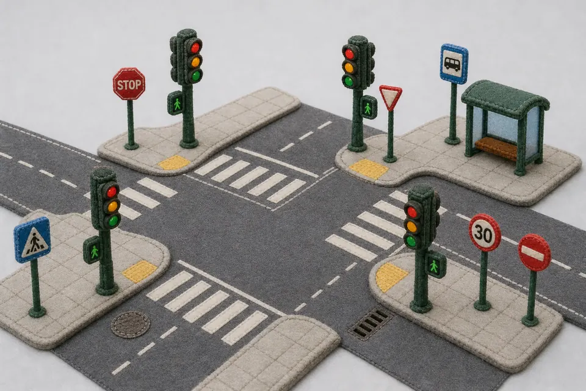
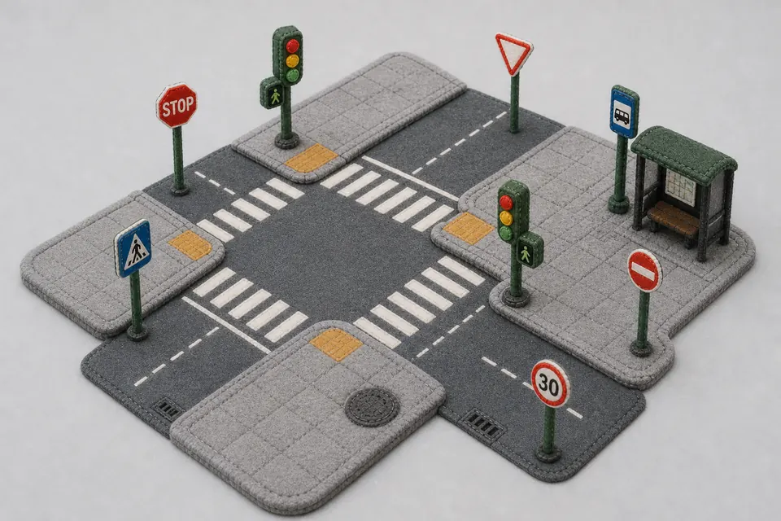
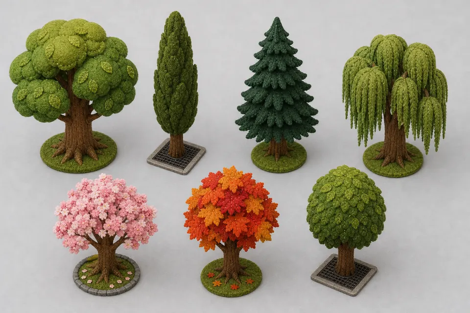
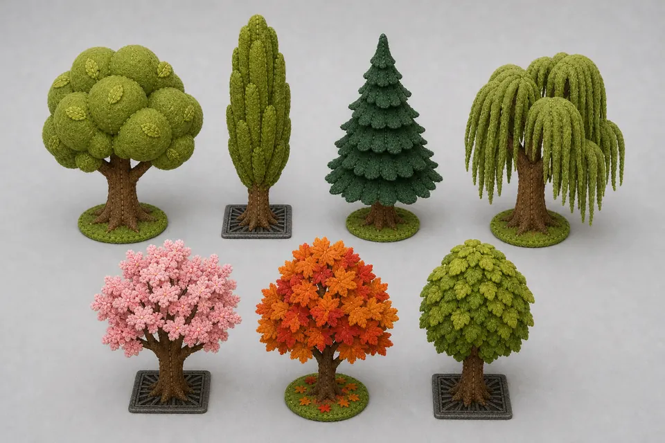
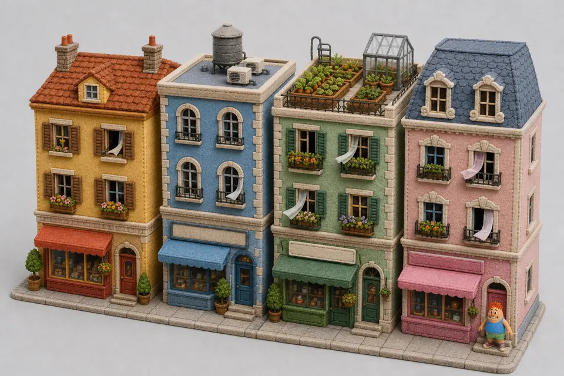
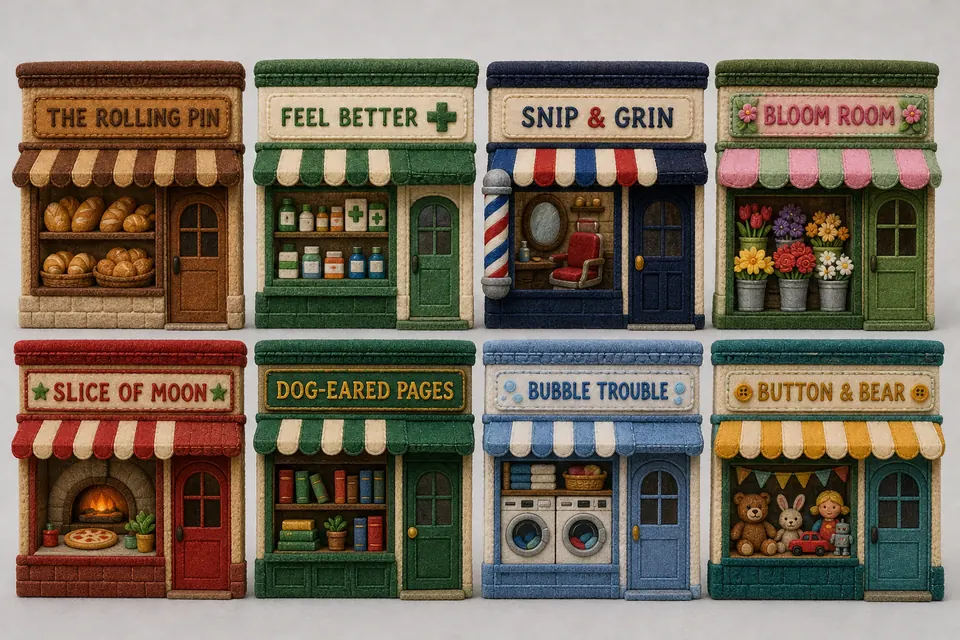
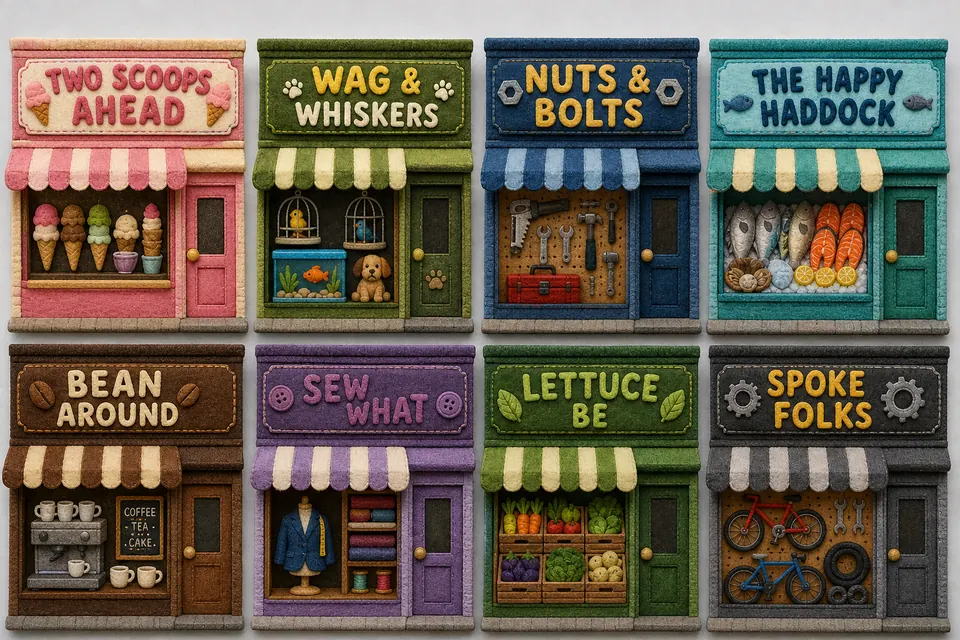

Round 1The crossroads
Kept: sheet 1


Asked: lane lines, zebra crossings, sidewalks with kerbs, traffic lights, road signs, all in felt with realistic proportions. The human kept sheet 1, with its warm paving and glazed bus shelter.
Round 1Bigger, varied trees
Kept: sheet 1


Seven kinds, much taller than Benny: plane, poplar, fir, willow, cherry in blossom, maple in autumn, lime. The human kept sheet 1, the darker greens.
Round 1Buildings and roofs
Kept: sheet 2


Doors in proportion to Benny (1.6 m tall, doors about 2.1 m), a shop on every ground floor, each floor its own, windows open and shut, and every roof different: chimneys, air conditioning, rooftop gardens. The human kept sheet 2: awnings over the shops, arched front doors.
Round 1Sixteen shops
Kept: sheet B


Every shop a different trade, every sign invented and sewn in its own lettering, the window showing what is sold inside. The human kept sheet B: the ice cream parlour, the pet shop, the hardware store, the fishmonger, the cafe, the tailor, the greengrocer and the bicycle repair.